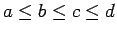
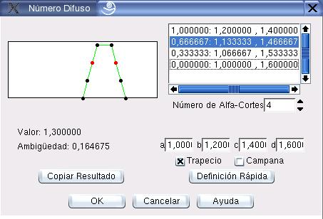

Edición de Números Difusos
Con el cuadro de diálogo que muestra la figura 7.3 se edita un número difuso. Se emplea en la definición de etiquetas y valores por defecto de variables lingüísticas (ver seccion 7.1).
Los principales componentes de este cuadro de diálogo se explican a continuación:
- Etiqueta:
- En este campo se edita el nombre de la etiqueta (Este campo no aparece en la definición de valores por defecto).
- Alfa-Cortes:
- La definición del número difuso se hace mediante alfa-cortes. En el cuadro se pintan y listan los alfa-cortes del número. Cuando se selecciona un alfa-corte en especial de la lista, éste se pinta en color rojo.
- Número de Alfa-Cortes:
- Mediante esta opción se puede modificar el número de alfa-cortes definidos en el número.
- Valor:
- Muestra el valor representativo del número difuso (Vease explicación en Sistemas de Computación con Palabras).
- Ambigüedad:
- Muestra la ambigüedad del número difuso (Vease explicación en Sistemas de Computación con Palabras).
- a/b/c/d/Definición Rápida:
- Permite definir rápidamente el número difuso a partir de cuatro vértices (
).
- Trapecio/Campana:
- Estas opciones mutuamente excluyentes establecen qué tipo de forma se desea dar al número cuando se emplea la opción Definición Rápida.
- Copiar Resultado:
- Permite copiar un número tomado de otro nodo (ver seccion 7.1.3)
Figura 7.3:
Diálogo para edición de números difusos
|

|
Oscar Duarte
2005-10-17